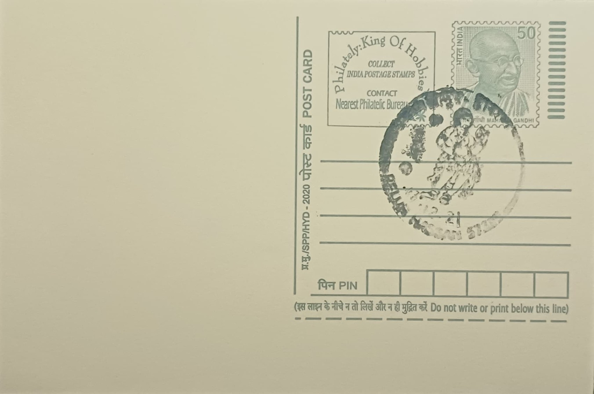

Darpana Sundari
ದರ್ಪಣ ಸುಂದರಿ


The name Darpana Sundari derives directly from the Kannada and Sanskrit-rooted terms darpana, meaning mirror, and sundari, meaning beautiful woman, and the sculpture is understood simply as a maiden admiring her own reflection. Unlike many temple carvings that illustrate a specific mythological episode, this figure and its companions were conceived as idealised portraits of courtly life rather than narrative scenes, a convention that let Hoysala artisans treat feminine beauty itself as a devotional and decorative subject fit for placement on sacred architecture.
Within the iconographic programme of Hoysala temples, Darpana Sundari belongs to a wider class of bracket figures known as madanikas or shilabalikas, carved at the junctions where temple eaves meet pillar capitals so that each figure appears to support the overhanging roof. At Belur's Chennakeshava temple alone, roughly three dozen such figures survive on the mandapa brackets, each given a descriptive epithet, including shuka sundari (with a parrot) and bhasma mohini, alongside Darpana Sundari, making the mirror-gazing maiden one of the most frequently photographed and discussed of the set.
The Chennakeshava temple that houses the best-known Darpana Sundari panel was commissioned by the Hoysala king Vishnuvardhana in 1117 CE to commemorate a military victory, and tradition credits master craftsmen Dasoja and his son Chavana, among other sculptors, with much of its decorative work, though construction and embellishment of the complex continued for over a century. The figures were carved from chloritic schist, a soft soapstone quarried locally that could be worked with fine chisels into delicate anklets, layered jewellery, and transparent-seeming drapery, the stone hardening and darkening only after prolonged exposure to air, which is what permitted the sharp, almost lathe-turned detailing visible on the figure's bangles and hair ornaments.
A distinguishing feature noted by visitors and scholars alike is the sense of movement built into the Darpana Sundari pose, her weight shifted onto one hip in a tribhanga stance while she tilts her head toward the mirror in her raised hand, sometimes accompanied by a small attendant figure at her feet, a compositional device that recurs with variation across the other madanikas rather than being unique to her. The Belur panel in particular has become something of an emblem for the temple complex as a whole, reproduced on postcards, guidebooks, and promotional material, even as near-identical mirror-holding maidens appear on the Hoysaleshwara temple at nearby Halebidu, underscoring how the motif circulated among workshops serving the Hoysala court.
Both temple complexes fall under the protection of the Archaeological Survey of India and were jointly inscribed, together with the Hoysaleshwara temple's neighbour at Halebidu and the temple at Somanathpur, as the UNESCO World Heritage Site "Sacred Ensembles of the Hoysalas" in September 2023, a listing that has brought increased conservation funding and visitor footfall to Belur. The Darpana Sundari bracket now draws a steady stream of art historians and tourists who view it as representative of the mandapa's sculptural programme, and local guides at the Chennakeshava temple routinely point it out as a highlight of any walk through the pillared hall, where it is viewed alongside the complex's other carved brackets rather than displayed in isolation.
| Date of Introduction | January 2, 1978 |
|---|---|
| Address | Sub Postmaster, |
| Belur SO, | |
| Hassan (dt.), Karnataka - 573115. |